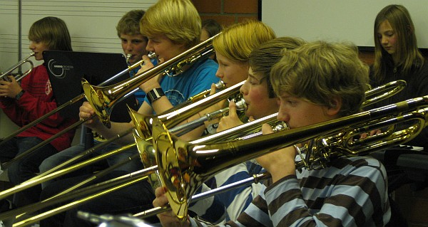
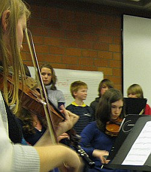

2012
School of Rock
Die Kleinsten sind die Größten
unser Clip
2009
8m

klasse Klassenkonzert

Von Florian (Text) und Valentin (Fotos) BunsmannNull Musikunterricht, und trotzdem ein 100prozentiges Konzert: Die Akteure des Klassenkonzertes der 8m zeigten, dass so etwas funktionieren kann. Da sie in diesem Jahr keinen Musikunterricht haben, nutzten die Schüler vor allem die neue Projektwoche vor den Herbstferien, um tüchtig zu proben. An mehreren Tagen in der Woche musizierten sie stundenlang, um ein optimales Ergebnis zu erzielen.
Dann, am vergangenen Freitag, fand im Musikraum des Grabbe-Gymnasiums die Aufführung unter der Leitung von Markus Wischer statt. Viele Eltern, Geschwister und Lehrer waren der Einladung gefolgt, und auch der ehemalige Schulleiter Walter Hunger kam extra von Paderborn aus angereist. Die 8m, die bis auf zwei Schüler vollständig erschienen war, begeisterte rund 50 Zuhörer mit zwei Musikstücken, an denen die gesamte Klasse beteiligt war. Das Programm umfasste Auftritte von fünf Solisten und sieben Gruppen.
 Besonders gut kam ,,der Entertainer'' von Scott Joplin an, den die Zuhörer wiederholt hören wollten: Sie bekamen ihn als Konzert-Zugabe am Ende tatsächlich noch einmal geboten. Das Publikum erlebte ein abwechselungsreiches Programm, das von Klassik bis Pop alle Musikformen enthielt. Nach einer Stunde war der musikalische Teil abgeschlossen, der Abend aber noch nicht zu Ende. Es gab noch die Möglichkeit für Mitwirkende und Zuschauer, sich am Büffet auszutauschen, während die Kinder draußen ein bisschen Fußball spielten.
Besonders gut kam ,,der Entertainer'' von Scott Joplin an, den die Zuhörer wiederholt hören wollten: Sie bekamen ihn als Konzert-Zugabe am Ende tatsächlich noch einmal geboten. Das Publikum erlebte ein abwechselungsreiches Programm, das von Klassik bis Pop alle Musikformen enthielt. Nach einer Stunde war der musikalische Teil abgeschlossen, der Abend aber noch nicht zu Ende. Es gab noch die Möglichkeit für Mitwirkende und Zuschauer, sich am Büffet auszutauschen, während die Kinder draußen ein bisschen Fußball spielten.
29. November 2009

10m
Schöne Tanzvorführungen
|
|
2006
9m
abwechslungsreich und unterhaltsam
Alle ziehen an einem Strang
von Sophia Brenk (Text) und Christian Oesterwinter (Fotos)
Die Zuschauer staunten nicht schlecht, als sie die Neue Aula unserer Schule betraten. Die Klasse hatte ganze Arbeit geleistet und aus den langweiligen Sitzreihen der ersten Zuschauerränge nette und gemütliche Tischgruppen gemacht mit allerlei Schleckereien auf den Tischen.
Als dann alle Zuschauer einen Platz gefunden hatten, konnte es losgehen.
Die ganze Klasse betrat aufgeregt die Bühne und stellte sich nach Stimmen geordnet auf, denn die Jugendlichen hatten unter der Leitung ihres Musiklehrers, Herrn Wischer, eine Air von Johann Sebastian Bach dreistimmig einstudiert. Das Ergebnis dieser Zusammenarbeit war sehr gelungen und die Zuschauer waren schon nach der ersten Darbietung förmlich aus dem Häuschen.
Nach diesem gelungenen musikalischen Einstieg wurde es plötzlich dunkel in der Aula und es herrschte völlige Stille. Mitten in diese Stille improvisierte Daniel Neufeld gekonnt ein paar Takte auf dem Klavier, als dann der Scheinwerfer anging und sich auf den Vorhang richtete.
Durch den Vorhang betrat dann Moderator Maximilian Illers die Bühne und verzauberte die Zuschauer mit seinem Charme. Mit seiner Art von Humor und seiner Spontanität in so manch einer Situation lockerte er die ganze Atmosphäre auf und schaffte eine tolle Stimmung, in der man die ganze Aufregung vergaß.
Es folgten sehr schöne Darbietungen, die jeden Musikstil abdeckten.
Diese Abwechslung der verschiedenen Musikzeitalter machte das Programm für die Zuschauer interessant; so hörten sie erst zwei Flöten-Duette von Francois Devienne und lauschten anschließend dem bekannten Titanic-Song „My heart will go on“, gespielt von Sophia Backhaus am Klavier.
Holzbläser und Streichinstrumente konnte man in jeder Variante genießen, ob in Trio-Formation - Jakob Warlich, Cornelia Dirks und ich, die einen Satz einer Schickhart-Sonate spielten, oder als Duett oder auch als Soloinstrument mit Klavierbegleitung. Verena Volbracht an der Klarinette wurde bei ihrem Stamitzkonzert begleitet von Mona-Karolin Schnittger. Lina Tölle präsentierte gemeinsam mit ihrer Begleitung Verena Böckenhoff eine Sonate von Wolfgang Amadeus Mozart.
Streicher pur behaupteten sich bei diesem Konzert natürlich auch, in Form von Duetten, bestehend aus zwei Geigen oder einem Cello und einer Geige.
An gesanglichen Darbietung fehlte es an diesem schönen Tag auch nicht. Das King-Kong-Quartett, das inzwischen nur noch aus drei Mitgliedern besteht (Jakob Warlich, Jonathan Frank und Benedikt Böing) und nach einem Namen sucht, hatte schon beim letzten Konzert alle vom Hocker gerissen. Auch diesmal übertrafen sie mit ihren A-Capella Stücken alle Erwartungen und lieferten eine geniale und professionelle Show ab. Die Mädchen ließen sich es trotzdem nicht nehmen, auch mal ihre gesanglichen Künste unter Beweis zu stellen, und landeten mit dem Song „Killing me softly“ einen Volltreffer. Die vier Mädels (Janna Walter, Cornelia Dirks, Lina Tölle und ich) sangen anschließend noch „Let it be“ von den Beatles, begleitet von einem Schlagzeuger (Daniel Fahl) und Daniel Neufeld am Klavier.
Das Programm wurde geschlossen durch ein Orchester-Werk von Telemann, gespielt vom Kammerorchester des Grabbe-Gymnasiums, das im Moment nur aus Schülern dieser Klasse besteht. In drei Sätzen zeigte die Klasse, dass die Musiker auch super als Orchester zusammen spielen können.
Solche sehr erfolgreichen Klassenkonzerte können nur zustande kommen, wenn die ganze Klasse an einem Strang zieht. Diese Klasse hat bewiesen, dass sie nicht nur schulisch ein Super-Team sind, sondern auch privat alle sehr gut miteinander klarkommen.